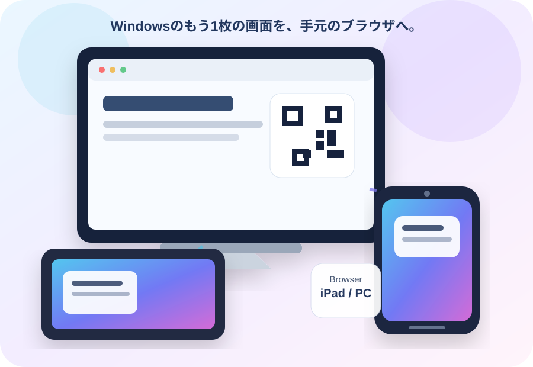
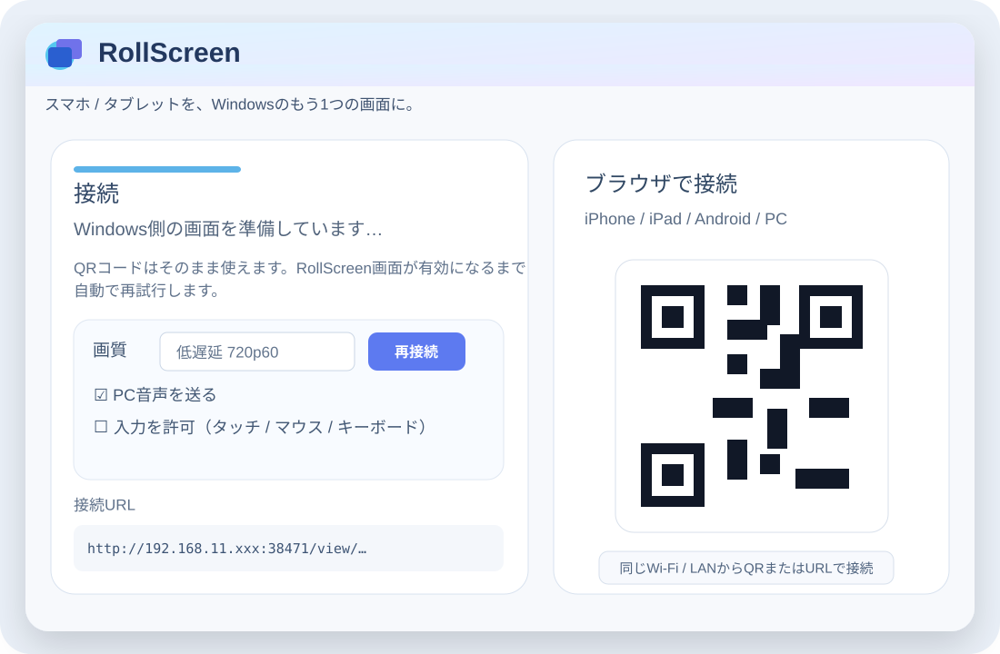
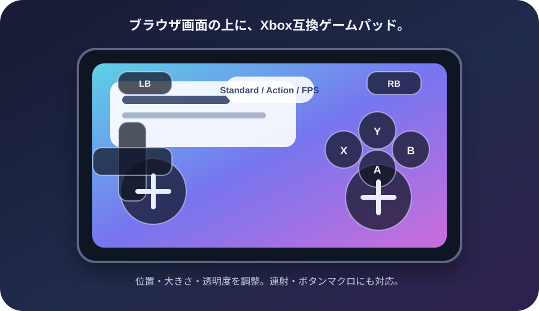

RollScreenを起動
Windowsに拡張画面を追加し、接続用QRコードとURLを表示します。
もう1台の画面を、手元の端末で。
iPhone・iPad・Android・別PCのブラウザを、Windowsの拡張ディスプレイとして使えます。Windowsで起動し、QRコードやURLを開くだけ。端末側への専用アプリは不要です。


Windows側では接続状態、画質、PC音声、入力許可をまとめて管理。Viewer側はブラウザだけで接続できます。
単なるミラーリングではなく、Windowsに仮想ディスプレイを追加します。
Windowsに拡張画面を追加し、接続用QRコードとURLを表示します。
iPhone / iPadはSafari、Androidや別PCはChrome / Edge系ブラウザから接続します。
追加されたRollScreen画面へ、資料やチャット、ツールなどをそのまま移動して使います。
映像、PC音声、リモート入力、ゲームパッドまで、ブラウザViewerの上でつなげています。
仮想ディスプレイとして追加。普段のマルチモニターと同じようにウィンドウを移動できます。
同じLAN / Wi-FiならQRまたはURLから接続。端末側への専用Viewerアプリは不要です。
低遅延映像とWindows音声に対応。AVシンクとBluetooth等の追加遅延補正も行えます。
別PC、スマートフォン、タブレットからマウス・タッチ・文字入力をWindowsへ送れます。
端末の向きとRollScreenの90°回転に合わせて、ゲームパッドなどのUIも追従します。
Tailscale接続を推奨。Direct Internetは上級者向けとして分離しています。
左右スティック、D-pad、ABXY、LB/RB、LT/RT、L3/R3をViewer上に表示。Xbox / Switch風の配置を選べ、ボタン位置・大きさ・透明度も調整できます。

同じPC内ではWindowsのカーソル・フォーカス・IMEがViewerと競合するため、0.8.2では同PCマウス・文字入力を無効化しています。別PC / iPhone / iPad / Androidを正式なリモート入力経路として扱います。
現在はBeta / 確認版です。HIDMaestroを使用するゲームパッド機能を含み、開発用ドライバ証明書の確認が表示されます。Formal Stable版ではありません。